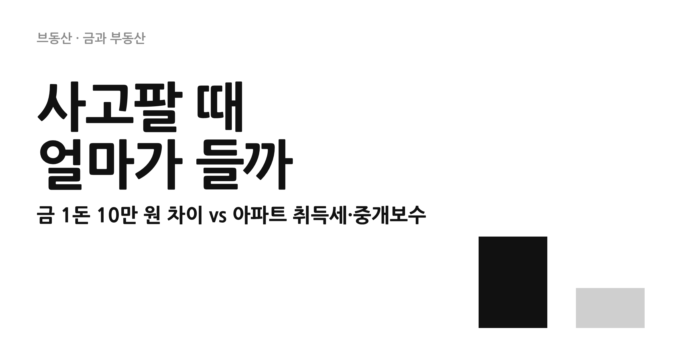
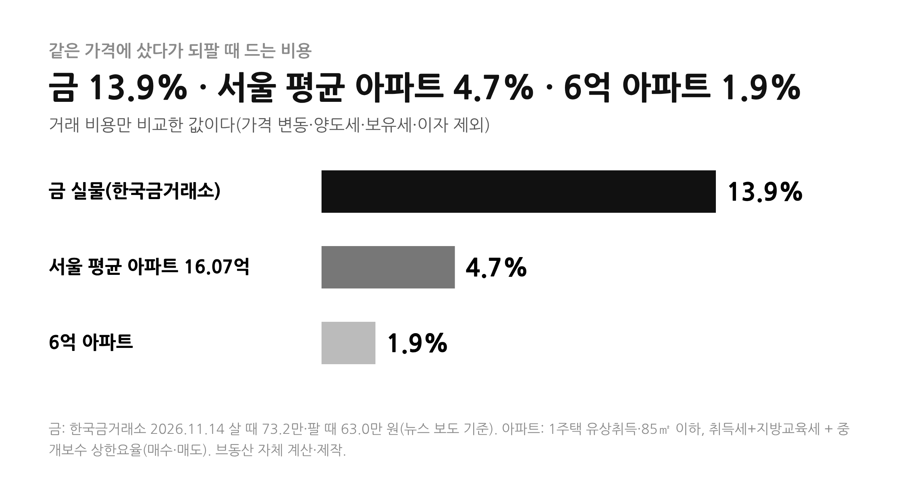
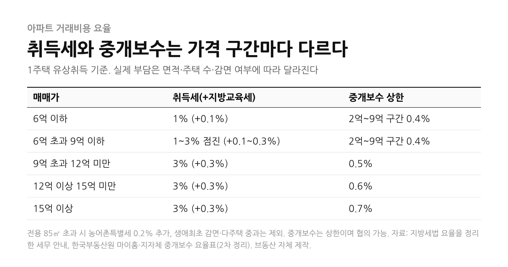
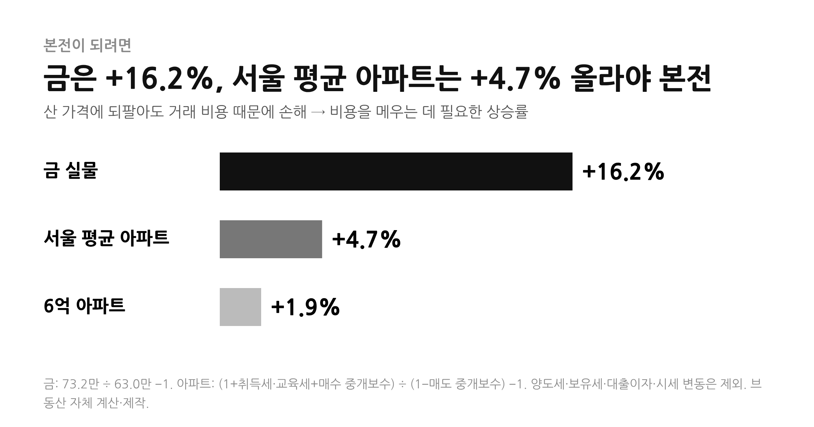
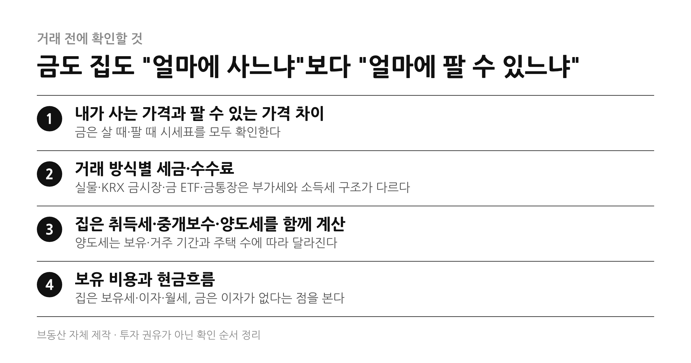

금값이 내려왔다는 뉴스 뒤에는 늘 같은 질문이 따라온다. 지금 금을 살까, 집을 살까? 어디가 오를지 맞히기 전에 먼저 확인할 것이 있다. 사고팔 때 얼마가 드는가다.
1. 핵심 요약 — 금 왕복 비용 약 14%, 서울 평균 아파트 약 4.7%
- 01 · 금 시세
- 11월 13일 한국거래소(KRX) 기준 금 1돈은 62만 7,825원이다. 한국금거래소 11월 14일 시세는 살 때 73만 2천 원, 팔 때 63만 원이고 국제 금값은 온스당 3,880달러대다.
- 02 · 금의 거래 비용
- 살 때와 팔 때 차이는 약 10만 2천 원으로 살 때 가격의 약 13.9%다. 부가세 10%는 개인이 팔 때 돌려받지 못하고 임가공비·유통 이윤이 더해진다고 업계는 설명한다. 본전이 되려면 시세가 약 16.2% 올라야 한다.
- 03 · 아파트의 거래 비용
- 취득세·지방교육세와 중개보수가 든다. 서울 평균 매매가(KB 16.07억) 예시로 취득세 등 약 5,304만 원, 중개보수 상한 약 2,250만 원(매수·매도)이라 합계 약 7,555만 원(4.7%)이다. 6억 원 아파트는 약 1,140만 원(1.9%)이다.
- 04 · 세금
- 아파트는 팔 때 차익이 있으면 양도소득세 대상이고 비과세 요건은 사람마다 다르다. 금은 골드바·KRX 금시장·금 ETF·금통장의 과세 구조가 서로 다르다.
- 05 · 읽는 법
- 이 글은 거래 비용만 비교한다. 어느 쪽이 오를지, 어느 쪽이 유리한지 단정하지 않으며 투자 권유가 아니다.

2. 금은 왜 살 때와 팔 때 가격이 다를까
금 시세 뉴스에는 늘 두 가지 숫자가 나온다. 한국금거래소 11월 14일 기준으로 순금 24K 1돈은 살 때 73만 2천 원, 팔 때 63만 원이다. 한국거래소(KRX) 금시장에서 11월 13일 거래된 1돈 가격 62만 7,825원은 팔 때 시세에 가깝다. 국제 금값은 같은 시기 온스당 3,880달러대에서 움직였다.
살 때와 팔 때 차이가 생기는 가장 큰 이유로 업계는 부가가치세를 꼽는다. 실물 금을 살 때 붙는 10% 부가세는 개인이 팔 때 돌려받지 못한다. 여기에 골드바를 만드는 임가공비와 운송비, 유통 이윤이 살 때 가격에 반영된다. 업계 설명으로는 소비자가 살 때 가격에는 팔 때보다 평균 15% 수준의 비용이 더 붙는다. 금값이 급등하거나 급락하는 시기에는 이 차이가 더 벌어진다는 설명도 있다.
그래서 오늘 금을 산 사람이 같은 가격에 바로 팔아도 1돈당 약 10만 2천 원이 줄어든다. 73만 2천 원을 63만 원으로 되파는 셈이라 본전이 되려면 시세가 약 16.2% 올라야 한다. 계산식은 73.2만 ÷ 63.0만 − 1이다. 같은 금이라도 KRX 금시장이나 금 ETF처럼 거래 방식이 다르면 이 구조가 달라진다(5번 항목).
3. 아파트는 사고팔 때 얼마가 들까
아파트를 살 때는 취득세와 지방교육세, 중개보수가 든다. 1주택자가 유상으로 취득할 때 취득세는 6억 원 이하 1%, 6억 원 초과 9억 원 이하는 1~3%, 9억 원 초과 3%이고 지방교육세가 따로 붙는다. 전용 85㎡를 넘으면 농어촌특별세 0.2%가 추가된다. 중개보수는 법정 상한이 있고 협의로 정하며, 2억~9억 원 구간 0.4%, 9억~12억 원 0.5%, 12억~15억 원 0.6%, 15억 원 이상 0.7%가 상한이다. 아파트는 취득세를 사는 쪽이 내고 중개보수는 매수자와 매도자가 각각 낸다.

KB 기준 서울 아파트 평균 매매가는 8월에 16억 739만 원으로 처음 16억대에 들어섰다. 이 가격을 예시로 전용 85㎡ 이하 1주택 취득을 계산하면 취득세 3%가 약 4,822만 원, 지방교육세 0.3%가 약 482만 원이다. 중개보수는 상한 0.7% 기준 약 1,125만 원이고 팔 때도 같은 상한이 적용되면 약 1,125만 원이다. 모두 합치면 약 7,555만 원으로 매매가의 약 4.7%다. 6억 원 아파트는 취득세와 지방교육세 약 660만 원에 중개보수 0.4%(약 240만 원)를 매수·매도 때 각각 내 합계 약 1,140만 원(1.9%)이다. 중개보수는 상한이므로 실제로는 더 낮게 협의될 수 있다.
4. 본전이 되려면 얼마나 올라야 할까
비용이 들어간 만큼 산 가격에 되팔면 손해가 난다. 금은 약 16.2%, 서울 평균 아파트는 약 4.7%, 6억 원 아파트는 약 1.9%의 가격 상승이 있어야 거래 비용을 메운다. 아파트는 비용 비율이 낮은 대신 가격이 크고 대출이자와 보유세, 양도세가 따로 붙으며, 금은 비용 비율이 높은 대신 보유 중 이자나 세금이 없다는 차이가 있다.

5. 세금 구조는 이렇게 다르다
금은 어떻게 사느냐에 따라 세금이 달라진다. 실물 골드바는 살 때 부가세 10%가 붙고 팔 때 돌려받지 못한다. KRX 금시장은 장내 매매차익이 비과세로 알려졌지만 실물로 인출하면 부가세와 수수료가 든다. 금 ETF와 금통장은 이익에 배당소득세 15.4%가 붙는 구조로 설명된다. 아파트는 팔 때 양도차익이 있으면 양도소득세 대상이고, 1세대 1주택 비과세 요건은 보유 기간과 거주 기간, 고가주택 기준, 주택 수에 따라 달라 사람마다 결과가 다르다. 양도세는 이 글의 4.7%에 포함돼 있지 않다.
| 자산 | 살 때 | 팔 때 |
|---|---|---|
| 골드바(실물) | 부가세 10%, 임가공비·유통 이윤 | 부가세 환급 없음. 매매차익은 과세 대상이 아니라는 설명이 많다 |
| KRX 금시장 | 전용 계좌 필요, 장내 거래는 부가세 없음 | 매매차익 비과세로 알려졌고 실물 인출 때는 부가세 10%와 수수료가 붙는다 |
| 금 ETF·금통장 | 상품별 수수료 | 이익에 배당소득세 15.4%, 금융소득이 많으면 종합과세 가능 |
| 아파트 | 취득세·지방교육세·중개보수 | 양도차익이 있으면 양도소득세 대상. 1세대 1주택 비과세 등 요건은 보유·거주 기간과 주택 수에 따라 다르다 |
금 투자 세금은 블로그·언론의 일반적 설명을 정리한 것이다. 거래 전 국세청과 한국거래소, 증권사 안내를 확인해야 한다.
6. 결론 — 오를 곳을 맞히기 전에 비용부터
금 1돈은 사고팔 때 약 10만 원(약 14%)의 차이가 나고, 서울 평균 아파트는 취득세와 중개보수만 따져도 약 4.7%가 든다. 비용 비율만 보면 금 실물이 훨씬 높고, 6억 원대 아파트는 상대적으로 낮다. 하지만 아파트는 금액이 크고 양도세와 보유세, 대출이자가 따로 있으며 금은 이자가 나오지 않는다. 어느 자산이 더 낫다고 결론 내릴 수는 없다. 다만 어느 쪽이든 오르는 폭보다 내가 부담하는 비용부터 확인하는 편이 안전하다.

참고한 자료
더페어 · 오늘(13일) 금시세 하락, 순금 1돈 73만7000원 ↗ · 톱스타뉴스 · 금 한돈 62만7825원, 5거래일째 하락(KRX, 11.13) ↗ · 글로벌이코노믹 · 국제금값 3950달러 밑으로(11.12) ↗ · 한국경제 · 금 살 때와 팔 때 1돈당 차이(2026.1.21) ↗ · 금 매매 세금 총정리(골드바·KRX 금현물·금통장·금 ETF) 안내 ↗ · 헤럴드경제 · 서울 아파트 평균 매매가 첫 16억 돌파(2026.8.23, KB 기준) ↗ · 취득세율 안내(지방세법 §11 요율 정리) ↗ · 한국부동산원 마이홈 · 중개보수 ↗